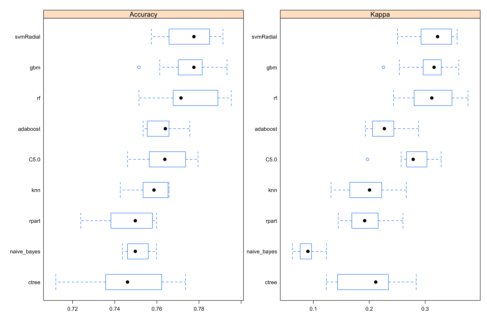

Predictors of Climate Change Perceptions:
A Machine Learning Approach
Dr. Fatih Uenal, Cambridge, UK
1. Overview
In the following, I am presenting some results of my work on Predictors of Climate Change Perceptions: A Machine Learning Approach. The goal of this full-stack data science project is to download, wrangle, explore, and analyze European Citizens’ perceptions of climate change using 10 different Machine Learning (ML) Algorithms (KNN, naiveBayes, Random Forest, adaBOOST, SVM, Ensemble, ctree, GBM, C5.0, rpart) based on data from the 8th round European Social Survey (2016). I will also employ hyper-parameter tuning (e.g., tuneGrid and tuneLength) to improve the results. The response variable (outcome) in this project is “climate change worry”, i.e., whether or not individuals in more than 20 European countries and Israel are worried about climate change. The response to this variable will be binary (‘yes’ vs. ‘no’) and thus, this project deals with a classification problem. The report thus consists of seven parts:
Following this Overview section, I will provide some contextual information on the data and classification problem of this project in the Introduction section.
The following Data Download & Preparation section describes how to download and prepare the data-sets. The data set containing over 500 columns most of which are irrelevant for this project. In this section I therefore also clean the data by removing many of the unnecessary columns such as ‘administrative’ columns from the data-set and describe how I arrived at the final, cleaned data set.
The following section Exploratory Data Analysis (EDA) describes the performed exploratory data analysis and provides an overview of the data and first approaches to optimize it for the machine learning algorithms. Before I begin with the EDA, the trainData- and testData sets are generated.
In the Methods and Analysis section, I will first perform some feature engineering using several pre-processing steps. After the pre-processing, I will run several ML Algorithms and employ hyperparameter tuning to some of them. Next, I will apply the same pre-processing steps on the testData set, and compare the accuracy of each trained model on the test set.
In the Results section, I will briefly present the results of the model comparison on the test set and determine the best ML model using appropriate model evaluation metrics.
The report ends with a Conclusion section presenting the main findings, and providing some insights into the limitations of the analysis as well as discussing possible future directions.
Pleas note that some of the following information is part of an academic manuscript which is currently in peer-review process.
2. Introduction
Reports on the impact of climate change on planetary health are distressing (e.g., Díaz et al., 2019; IPCC, 2014; Whitmee et al., 2015). Yet, despite being one of the most important societal challenges of our time, public perceptions of and engagement with climate change reveals great variation in regard to acknowledging the urgency and severity of the issue (e.g., Goldberg et al., 2020). Previous studies indicate that a sense of feeling threatened by climate change seems pivotal for increasing prosocial and pro-environmental attitudes and behaviors aimed at mitigating the consequences of global warming (e.g., Leiserowitz, 2005; Lee et al., 2015). However, previous research also shows that individuals differ greatly in their climate change risk and threat perceptions (e.g., Uenal et al., 2020; van der Linden et al., 2015). Against this background, a growing body of results from an interdisciplinary field spanning psychology, sociology, economics, and communication has identified a wide array of individual and macro-level predictors of climate change perceptions and attitudes (e.g., Swim et al., 2011; Howe et al., 2015; Inglehart, 1995; van der Linden, 2015).
Nevertheless, practical research limitations—such as limited degrees of freedom using traditional statistics methods—has prevented researchers from directly comparing or meaningfully aggregating the predictive power of these multi-level variables (c.f. Howe et al., 2015; Lee et al., 2015). Moreover, previous research has analyzed individual or macro-level predictors independently from each other. Yet, individual-level perceptions and attitudes do not emerge in a socio-economic vacuum but are crucially shaped by ongoing interactions between systematic individual differences and the affordances and constraints of one’s immediate and lager socio-ecological environment (e.g., Gelfand et al., 2011; Kunst et al., 2017; Sheehy-Skeffington & Thomsen, 2020; Sidanius & Pratto, 1999).
In this project, I am going to make use of ML algorithms to overcome the shortcomings of previous studies using data from the 8th Round of the European Social Survey (2016). “The European Social Survey (ESS) is an academically driven cross-national survey that has been conducted across Europe since its establishment in 2001. Every two years, face-to-face interviews are conducted with newly selected, cross-sectional samples. The survey measures the attitudes, beliefs and behaviour patterns of diverse populations in more than thirty nations.” The 8th Round of the ESS contains climate change attitudes and a wide of predictor variable of interest. Using this data, I will employ several ML techniques to accurately predict whether or not individuals in this survey are either worried or not worried by climate change and identify which predictors (‘features’) are the most robust and important factors explaining differences in climate change worry.
The goal of this project is to distil the most robust individual and macro-level predictors of climate change perceptions and attitudes. I will use multi-level machine learning modelling (random forests: Breiman, 2001) to predict climate change perceptions and attitudes in each dataset. The random forests method is designed to handle a large number of predictors at once, with the goal of explaining as much variance in the outcome variable as possible. By comparing results across many datasets, research questions I hope to answer are: a) How much variance in climate change perceptions and attitudes are currently predictable by individual and macro-level predictors across countries? b) Which psychological and macro-structural measures most reliably emerge as predictors of climate change perceptions?

3. Data Download & Preparation
3.1 Data Access
Data Access Route 1
The data set is publicly available following the below link:
Data Access Route 2
Alternatively to downloading from the above the link, one can also use the ‘essurvey’ package. A description on this package and its’ usage is available in the below link:
3.2 Download
For this project, I used the second method, and downloaded the data using the ‘essurvey’. Please note that you will need to first set an account with ESS and than use your email address to be able to download the data if you choose to use the ‘essurvey’. The code to download the data via the ‘essurvey’ package is in the accompanying R script. However, due to privacy concerns, I am not using this method in this project. Instead, the data is available in my github repository. Executing the current file should automatically download the data from my github. If that does not work, please download the data from github directly and load it locally (code provided in R script and rmd file but commented #).
PLEASE NOTE: The code is included in the RMD file but explicitly tuned off (echo=FALSE).
3.3 Preparation
As mentioned in the Overview section, the raw data set contains many variables which are irrelevant to this project. As visible below, the raw data set contains 534 columns each representing one variable corresponding to a question asked in the survey or an administrative question and 44387 rows, each corresponding to one surveyed person.

It is also visible that the raw data set contains many missing values as well as different types of variable (e.g., integer, character, etc.). It is clear at this point that data selection and cleaning will require studying the survey documentation prior to anything else. The Survey documentation is very detailed and thorough and can be accessed following this link:
Having studied the data documentation, I decided to remove many columns from the data-set. I explain my choices below:
Since I am interested in analyzing “climate worry” across countries and not for each country individually, the country specific variables are of no relevance for my goal. So I am going to remove the country specific variables all together.
For similar reasons as above, I also don’t need the sampling stratification weights and population weights and will remove those from the data set as well.
The data set also contains a number of so-called ‘administrative variables’ such as interview time and date etc. which are not relevant for my goals and will thus be removed.
The survey documentation also list several binary type variables which indicate no relevance to this projects main objective and I will thus remove those as well.
Lastly, the survey contains many missing values which are coded in many different ways. For example, missing values refer to invalid answers (e.g. refusal, don’t know, missing) which are encoded with numbers 66, 77, 99 for some features, and with 6, 7, 8, 9 for the other features. Generally, there are a lot of different ways of how the question encoding was designed. This may be the result of many different groups of people working on this survey. I will make use of the ‘esssurvey’ function to automatically label all invalid answers into NaN values. See documentation of this package in the link provided above.
Given the large amount of specific cleaning tasks, I manually went through the documentation, retrieved all the information needed for the cleaning and removed all irrelevant variables and saved the cleaned data set as ‘ess8_subsample.csv’.
As visible below, the cleaned data set now contain fewer missing values but still a high number of columns (120). There are still are large number of missing values present: 69509.
Before proceeding to the next section, I will thus further process the data by identifying features with missing values above 50% and so-called zero-variance features and remove them. As shown below, several features contain more than 50% missing values. I am going to drop these from the data set following general recommendation on dealing with missing values. Note that an alternative way to deal with missing values would be to impute them using mean/median/mode imputation techniques. However, for the purpose of this project it is sufficient to simply remove them.
Checking again for missing values, we can now see that we have less missing values overall (22351) and that the remaining features all have missing values below 50%
Checking zero-variance features indicates that non of the remaining features show zero variance and thus I don’t have remove any feature based on this criterion.
## character(0)Moreover, I will check for missing values in the main variable of interest for this project, the outcome variable ‘wrclmch’ (Worry Climate Change). As shown below, the response variable contains` missing values.
Dropping these will not result in a significantly smaller data set so I will drop all rows containing missing values for the response variable as well.
Next, I will transform the response variable from an ordinary scale type (1: Not Worried to 5: Very Worried) to a binary scale type, to allow for a classification approach. The ‘wrclmch’ response variable will thus be categorized in ‘Not Worried’ vs. ‘Worried’ from here on after. Alternatively, I could have continued to use the outcome as ordinal variable and use regression ML techniques. However, for the sake of simplicity in interpreting the results, it seems more pertinent, to approach the response variable as a binary entity.
As shown below, the response variable is now coded as a binary variable.
##
## Not_worried Worried
## 1106 3128Similarly, I will also factorize and re-label the gender feature in order to improve the visualization in the coming sections.
As final steps, I will remove the ‘idno’ column because it is not necessary for my analytic purpose.
This data cleaning process is a good example in that it shows that real world data can be quite messy and require some effort to bring into shape such that it is ready for Machine Learning approaches. Also, the example here shows that it is important to use any given information on the data. In this case, the study documentation was very helpful in determining how to best clean the data. Many other real world data sets will not have the luxury of meticulous data documentation and I might count myself lucky in this regard.
After having cleaned the raw data set as described above, I proceed to the next stage of this project: Exploratory Data Analysis.
4. Exploratory Data Analysis (EDA)
4.1. Train - Test Data Split
Before I start with the EDA, I am going to first split the data into trainData- and testData sets.
trainData - a subset (60%) to work with and to develop the models, and
testData - a subset (40%) to test the final models
This is an important step to accomplish prior to EDA since using the entire data set for EDA purposes would obfuscate our train-test set-up by basing our initial understanding of the data on both the trainData- and testData sets. However, following good Data Science practice requires us to avoid making any decisions based on the test set to avoid so-called data leakage and increase the robustness and generalizability of the results.
4.2. Frequencies & Distributions
After cleaning and partitioning the data, I proceed to taking a quick glance at the distribution and frequencies of the data. As shown below, some variables show skewed distributions.
First, let’s find out how our response variable is distributed across both the trainData- and the testData-sets. In other words, let’s see how many respondents indicated that they were worried about climate change vs. not worried. The distribution does not indicate a severely high class imbalance and we see that our sample contains more worried than not-worried responses.
trainData
##
## Not_worried Worried
## 663 1876testData
##
## Not_worried Worried
## 443 12524.3 Climate Change Perceptions Across Europe
Now, we’ll first tale look at the averaged weighted percentage of climate change concern and other variables present in the dataset by mapping them. How are European countries differing in terms of their climate change awareness, concern? What percentage of each countries population sees themselves as responsible for climate change? How high is the support for Climate Change Mitigation policies? And finally, what are the causal attributions of European Citizens in terms of identifying the cause of climate change (man-made vs. natural vs. denial)
Climate Change: Awareness
Climate Change: Threat Perceptions
Climate Change: Cause Attributions
Climate Change: Impact Valence
Climate Change: Feeling Responsibilty
Climate Change: Support for Mitigation Policies
4.4 National Level Predictors of Climate Change Perceptions and Attitudes
As we have seen in the previous visualizations, European citizens show differences in their climate change perceptions and attitudes. Next, we’ll start gaining some more in-depth insights by visualizing the relationship between our variable of main interest “climate change worry” and the available features. Previous research has identified dozens of factors which are involved in shaping whether people are concerned by climate change or not. These feature can be divided into National-level factors such as economic, political and environmental factors and Individual level factors such as beliefs, values, ideology etc. The data set contains many such variables, and I am presenting only a subset of these below.
We’ll start by analyzing some National-level factors.
Economic Factors
Gross Domestic Product (GDP)
Socio-Economic Inequality (GINI Coefficient)
Environmental Factors
Environmental Performance (EPI)
Environmental Health Index
Ecosystem Vitality Index
Political Factors
EnvironMental Policy Stringency
Green Party Seats Parliament
Number of Supply Side Restrcition Fossil-Fuel Policies
Risk Factors
Climate Risk Index (CRI)
Country Greenhous Gas Emissions (MTCO2e)
Domestic Material Consumption (DMC)
4.5 Individual Level Predictors of Climate Change Perceptions and Attitudes
Next, we’ll visualize the relationship between individual level factors such as values, beliefs, and ideology and our outcome variable, climate change concern.
Human values
Environemntal Values
Materialism
Politics
Political Orientation
Trust in the European Parliament
Immigration bad or good for country’s economy
Welfare attitudes
Government should reduce differences in income levels
Attitudes toward a basic income scheme
Risk of Unemployment
5. Methods & Analysis
5.1 Data Pre-processing
Before starting with the pre-processing of the data, I will also remove the ‘country’ feature, as I am mostly interested in classifying responses across countries.
I will also relocate the position of the response variable ‘wrclmch’ to the very beginning of the data frame for convenience sake.
I will also store my response variable and my feature separately for later usage.
5.1.1 Missing Value Imputation
In the previous sections, we have seen that the data set contains missing values, as I have only removed feature that had more than 50% missing values. For the modelling section, the first thing to implement is to deal with the remaining missing values. There are several approaches to dealing with missing values. There are many important considerations to make, before starting to handle missing values, such as understanding whether the missing data is missing randomly or whether there is some pattern to the missingness and so on. A sophisticated approach to dealing with missing data is to predict the missing values based on values of the rest of the available variables as predictors. One popular approach that achieves this type of imputation is the k-Nearest Neighbours algorithm. However, the k-Nearest Neighbours algorithm comes at high computational cost and I will not implement it here due to resource constrains. Another common practice is to simply replace missing values with the the mean/median/mode of the column. For continuous features, it is a common practice to replace the missing values with the mean of the column. For categorical features, replace the missing values with the the mode, the most frequently occurring value is commonly practised. Therefore, for the continuous variables, I will use the preProcess function ‘medianImpute’ to impute missing values. I am choosing ‘median impute’ over ‘mean impute’, because the EDA also indicated that the data is not normally distributed in many cases and show high skewness. In case of skewed data, median imputation is generally recommended.
The caret package offers a convenient preProcess function that handles missing values. Importantly, the same preprocessing we apply to the trainData also needs to be applied to the testData later on.
## Impute Missing Values with medianImpute Method
# Create the median imputation model on the training data
preProcess_missingdata_model <- preProcess(trainData, method = "medianImpute")
preProcess_missingdata_model## Created from 552 samples and 123 variables
##
## Pre-processing:
## - ignored (2)
## - median imputation (121)As shown below, after imputation of missing values, the data contains no more missing values.
# Use the imputation model to predict the values of missing data points
trainData <- predict(preProcess_missingdata_model, newdata = trainData)
# Check for NaNs
anyNA(trainData)## [1] FALSE5.1.2 Normalization
As was shown in the previous sections, the data set contains features with differing scale units and ranges. A common practice in such cases is to normalize data before modelling. The caret package offers an easy way within the preProcess function to apply normalization of data sets, which I am applying next. Below we can see the first 10 columns of the data set indicating that the data has been successfully normalized.
## Normalize data
preProcess_range_model <- preProcess(trainData, method = "range")
trainData <- predict(preProcess_range_model, newdata = trainData)
# Append the Y variable
trainData$wrclmch <- y
# Show first 10 columns of normalized data
apply(trainData[, 1:10], 2, FUN = function(x) {
c("min" = min(x), "max" = max(x))
})## wrclmch gndr nwspol netustm agea eduyrs
## min "Not_worried" "Female" "0.0000000000" "0.000000000" "0.00000000" "0.000"
## max "Worried" "Male" "1.0000000000" "1.000000000" "1.00000000" "1.000"
## netusoft ppltrst pplfair pplhlp
## min "0.00" "0.0" "0.0" "0.0"
## max "1.00" "1.0" "1.0" "1.0"5.1.3 Feature Selection
After having split the data in trainData- and testData sets, imputing missing values, and normalization of data, a sensible next step is to reduce the dimensionality of the data. With over 120 features, the data space is still very large even after removing many columns at the very beginning. However, many of these remaining features are probably not at all or not strongly associated with our response variable (i.e., an individuals’ perception of climate change as either worrying or not worrying). Moreover, too many features can cause problems such as requiring increased computational power leading to extremely long run-times on standard PCs (such as mine) as well as decreasing efficiency by including variables that have zero or very little predictive power.
To mitigate these issues, different approaches can be taken which allow to reduce the number of overall features. This process is also referred to as ‘Feature Selection’. Common ways of feature selection include Principal Components Analysis (PCA), using built-in methods of feature selection such as ‘recursive feature elimination (rfe)’, determining feature importance from decision trees or coefficients from Lasso-regularized linear regression to name a few. These approaches require running additional models prior to the main analysis.
A more convenient and less computationally expensive approach would be to only select features which are highly correlated with the response variable and exclude the remaining features from further analysis. I will take the latter approach due to time and resource constrains and select the 20 highest correlated features. The limitation of this approach however will be to sacrifice complexity in terms of not accounting for interaction terms between features. In other words, I might remove feature which individually are not highly correlated with the response variable but might indicate higher correlation values in interaction with other features.
Below are the 20 feature which are most highly correlated with the response variable.
## variables corr pvalue
## 64 wrdpimp 0.254707 1
## 65 wrtcfl 0.195127 1
## 121 impenv 0.185867 1
## 63 wrenexp 0.174498 1
## 69 sbsrnen 0.172207 1
## 105 ipeqopt 0.163486 1
## 60 elgsun 0.158191 1
## 68 inctxff 0.149993 1
## 61 elgwind 0.149677 1
## 114 iphlppl 0.148040 1
## 32 hmsfmlsh -0.136460 1
## 49 atcherp 0.135646 1
## 110 ipudrst 0.129837 1
## 66 lklmten 0.128574 1
## 33 hmsacld 0.125461 1
## 36 imdfetn 0.125344 1
## 39 imueclt 0.119649 1
## 120 iplylfr 0.118697 1
## 31 freehms 0.118618 1
## 37 impcntr 0.114369 1Let’s now visualize correlations between our the top 10 selected features and our response variable. The plots below are in line with the correlation analysis we computed further above.
Correlation Viz 1

Correlation Viz 2

Correlation Viz 3

5.1.4 Pre-processing testData
As I have applied the above pre-processing steps on the trainData-set alone, I will need to apply the same steps on the testData-set as well. Following the same steps undertaken with the trainData, I will
- remove the ‘country’ feature,
- relocate the response variable to the very beginning,
- store my response variable and my feature separately for later usage,
- impute the missing values,
- normalize the data, and
- finally, select the same 20 variables as in the trainData set.
5.2 Modeling
As I mentioned in the beginning, I will employ a number of Machine Learning Algorithms and compare the results of them to determine the best algorithm. I am taking this broader approach since the underlying motivation of this project is more training and showcasing of skills, rather than employing a model which will inform real-world decision making. I will employ 10 algorithms in total. These algorithms are quite commonly used and represent some of the most up to date and powerful algorithms available on the market.
PLEASE NOTE: Due to resource constraints, I will only work with a small subset of the whole data set. Specifically, I will randomly sample 4400 rows (10% of the original data set) for this project. Using the entire data set would result in extremely long run times for some of the more complex ML algorithms such as ‘AdaBoost’ and ‘Ensemble’.
5.2.1 Model Overview
knn
As a first ML algorithm, I will compute a K-Nearest Neighbours (KNN) model. More information on this model can be found under the link below:
I will evaluate the accuracy by testing different hyper-tuning parameter values. The plot below shows the optimal number of k yielding the best accuracy score. Thus, I will subsequently run a model with this value specification.
## Confusion Matrix and Statistics
##
## Reference
## Prediction Not_worried Worried
## Not_worried 56 24
## Worried 387 1228
##
## Accuracy : 0.7575
## 95% CI : (0.7364, 0.7778)
## No Information Rate : 0.7386
## P-Value [Acc > NIR] : 0.04
##
## Kappa : 0.1459
##
## Mcnemar's Test P-Value : <2e-16
##
## Sensitivity : 0.12641
## Specificity : 0.98083
## Pos Pred Value : 0.70000
## Neg Pred Value : 0.76037
## Prevalence : 0.26136
## Detection Rate : 0.03304
## Detection Prevalence : 0.04720
## Balanced Accuracy : 0.55362
##
## 'Positive' Class : Not_worried
## As shown above, a model with optimized number of (28 k) yielded an accuracy score of 0.7587021 which we determined above as best score between 1 to 30 k values.
C5.0
Next,, I will compute a C5.0 Decision Tree Algorithm. More information on this model can be found under the link below:
In the first run, I will run a model without parameter tuning.
## Confusion Matrix and Statistics
##
## Reference
## Prediction Not_worried Worried
## Not_worried 164 177
## Worried 279 1075
##
## Accuracy : 0.731
## 95% CI : (0.7092, 0.752)
## No Information Rate : 0.7386
## P-Value [Acc > NIR] : 0.7728
##
## Kappa : 0.2472
##
## Mcnemar's Test P-Value : 2.248e-06
##
## Sensitivity : 0.37020
## Specificity : 0.85863
## Pos Pred Value : 0.48094
## Neg Pred Value : 0.79394
## Prevalence : 0.26136
## Detection Rate : 0.09676
## Detection Prevalence : 0.20118
## Balanced Accuracy : 0.61441
##
## 'Positive' Class : Not_worried
## As shown above, the C5.0 model yielded an accuracy score of 0.7309735.
C5.0 Tuned
Let’s now see if we can improve the accuracy by testing different hypertuning parameter values. The plot below shows the optimal number of trials for the best accuracy score and we will subsequently run a model with this value.
## Confusion Matrix and Statistics
##
## Reference
## Prediction Not_worried Worried
## Not_worried 118 65
## Worried 325 1187
##
## Accuracy : 0.7699
## 95% CI : (0.7491, 0.7898)
## No Information Rate : 0.7386
## P-Value [Acc > NIR] : 0.001656
##
## Kappa : 0.2646
##
## Mcnemar's Test P-Value : < 2.2e-16
##
## Sensitivity : 0.26637
## Specificity : 0.94808
## Pos Pred Value : 0.64481
## Neg Pred Value : 0.78505
## Prevalence : 0.26136
## Detection Rate : 0.06962
## Detection Prevalence : 0.10796
## Balanced Accuracy : 0.60722
##
## 'Positive' Class : Not_worried
## As shown above, a model with optimized parameters (9 Trials) yielded a slightly better accuracy score of 0.7699115 compared to the previous model in which I did not apply hyperparameter tuning.
naiveBayes
The next ML algorithm I will compute is a Naive Bayes model. More information on this model can be found under the link below:
I will run a model re-iterating over 1 to 30 in ‘laplace’ values.
As visible in the plot above, varying the ‘laplace’ values does not improve (nor diminish) the prediction of the model. Thus, I will run a naiveBayes model without specific ‘laplace’ specification.
## Confusion Matrix and Statistics
##
## Reference
## Prediction Not_worried Worried
## Not_worried 215 230
## Worried 228 1022
##
## Accuracy : 0.7298
## 95% CI : (0.708, 0.7508)
## No Information Rate : 0.7386
## P-Value [Acc > NIR] : 0.8046
##
## Kappa : 0.3012
##
## Mcnemar's Test P-Value : 0.9627
##
## Sensitivity : 0.4853
## Specificity : 0.8163
## Pos Pred Value : 0.4831
## Neg Pred Value : 0.8176
## Prevalence : 0.2614
## Detection Rate : 0.1268
## Detection Prevalence : 0.2625
## Balanced Accuracy : 0.6508
##
## 'Positive' Class : Not_worried
## The results of this model are shown in the confusion matrix above. The model yielded an accuracy score of 0.7297935
SVM
Next, I will compute a Support Vector Machine (SVM) model. More information on this model can be found under the link below:
Let’s first try a model without hyperparameter tuning.
## Confusion Matrix and Statistics
##
## Reference
## Prediction Not_worried Worried
## Not_worried 99 57
## Worried 344 1195
##
## Accuracy : 0.7634
## 95% CI : (0.7424, 0.7835)
## No Information Rate : 0.7386
## P-Value [Acc > NIR] : 0.01033
##
## Kappa : 0.2251
##
## Mcnemar's Test P-Value : < 2e-16
##
## Sensitivity : 0.22348
## Specificity : 0.95447
## Pos Pred Value : 0.63462
## Neg Pred Value : 0.77648
## Prevalence : 0.26136
## Detection Rate : 0.05841
## Detection Prevalence : 0.09204
## Balanced Accuracy : 0.58897
##
## 'Positive' Class : Not_worried
## The confusion matrix visible above indicates an accuracy score of 0.7634218. Let’s see if we can improve upon this score by fine tuning some hyperparameters. Specifically, we are going to grid search over a range of different gamma and cost values.
SVM Tune
As shown in the plot above, the optimal number of parameters seems to be 13 yielding an accuracy score of 0.7681416. We will use this value for our optimized model.
## Confusion Matrix and Statistics
##
## Reference
## Prediction Not_worried Worried
## Not_worried 74 24
## Worried 369 1228
##
## Accuracy : 0.7681
## 95% CI : (0.7473, 0.788)
## No Information Rate : 0.7386
## P-Value [Acc > NIR] : 0.00283
##
## Kappa : 0.1976
##
## Mcnemar's Test P-Value : < 2e-16
##
## Sensitivity : 0.16704
## Specificity : 0.98083
## Pos Pred Value : 0.75510
## Neg Pred Value : 0.76894
## Prevalence : 0.26136
## Detection Rate : 0.04366
## Detection Prevalence : 0.05782
## Balanced Accuracy : 0.57394
##
## 'Positive' Class : Not_worried
## The confusion matrix above summarizes the results for the optimized SVM model. The accuracy score of the tuned model (0.7681416) is slightly better than the non-tuned model (0.7634218).
rpart
Next, I will compute a Recursive Partitioning (rpart) model. More information on this model can be found under the link below:
For the rpart model, I will use 5-fold cross validation with the caret packages’ in-built trainControl function. As hyperparameter tuning specifications, I will use the built-in function of the caret package by specifying the tuneLength argument to 2. The ‘tuneLength’ parameter tells the algorithm to try different default values for the main parameters, in our case 2. I will use both the tuneLength and the trainControl functions for the following models as well.
## Confusion Matrix and Statistics
##
## Reference
## Prediction Not_worried Worried
## Not_worried 72 66
## Worried 371 1186
##
## Accuracy : 0.7422
## 95% CI : (0.7207, 0.7629)
## No Information Rate : 0.7386
## P-Value [Acc > NIR] : 0.3821
##
## Kappa : 0.1412
##
## Mcnemar's Test P-Value : <2e-16
##
## Sensitivity : 0.16253
## Specificity : 0.94728
## Pos Pred Value : 0.52174
## Neg Pred Value : 0.76172
## Prevalence : 0.26136
## Detection Rate : 0.04248
## Detection Prevalence : 0.08142
## Balanced Accuracy : 0.55491
##
## 'Positive' Class : Not_worried
## The rpart model confusion matrix is shown above.
ctree
Next, I will compute a conditional inference trees (CTree) model. More information on this model can be found under the link below:
## Confusion Matrix and Statistics
##
## Reference
## Prediction Not_worried Worried
## Not_worried 112 124
## Worried 331 1128
##
## Accuracy : 0.7316
## 95% CI : (0.7098, 0.7525)
## No Information Rate : 0.7386
## P-Value [Acc > NIR] : 0.7559
##
## Kappa : 0.1811
##
## Mcnemar's Test P-Value : <2e-16
##
## Sensitivity : 0.25282
## Specificity : 0.90096
## Pos Pred Value : 0.47458
## Neg Pred Value : 0.77313
## Prevalence : 0.26136
## Detection Rate : 0.06608
## Detection Prevalence : 0.13923
## Balanced Accuracy : 0.57689
##
## 'Positive' Class : Not_worried
## Using again 5-fold cross-validation and setting tuneLength argument to 2, the ctree model yielded the above results.
Random Forest
Next, I will compute a popular and widely used Random Forest model. More information on this model can be found under the link below:
## Confusion Matrix and Statistics
##
## Reference
## Prediction Not_worried Worried
## Not_worried 102 54
## Worried 341 1198
##
## Accuracy : 0.767
## 95% CI : (0.7461, 0.7869)
## No Information Rate : 0.7386
## P-Value [Acc > NIR] : 0.003983
##
## Kappa : 0.2367
##
## Mcnemar's Test P-Value : < 2.2e-16
##
## Sensitivity : 0.23025
## Specificity : 0.95687
## Pos Pred Value : 0.65385
## Neg Pred Value : 0.77843
## Prevalence : 0.26136
## Detection Rate : 0.06018
## Detection Prevalence : 0.09204
## Balanced Accuracy : 0.59356
##
## 'Positive' Class : Not_worried
## The results for the Random Forest Model are shown above.
GBM
Next, I will compute a Gradient boosting (GBM) model. More information on this model can be found under the link below:
## Confusion Matrix and Statistics
##
## Reference
## Prediction Not_worried Worried
## Not_worried 118 87
## Worried 325 1165
##
## Accuracy : 0.7569
## 95% CI : (0.7358, 0.7772)
## No Information Rate : 0.7386
## P-Value [Acc > NIR] : 0.04508
##
## Kappa : 0.2382
##
## Mcnemar's Test P-Value : < 2e-16
##
## Sensitivity : 0.26637
## Specificity : 0.93051
## Pos Pred Value : 0.57561
## Neg Pred Value : 0.78188
## Prevalence : 0.26136
## Detection Rate : 0.06962
## Detection Prevalence : 0.12094
## Balanced Accuracy : 0.59844
##
## 'Positive' Class : Not_worried
## The results for the GBM model are shown above.
adaBOOST
Next, I will compute a Adaptive Boosting (adaBOOST) which is a statistical classification meta-algorithm model. More information on this model can be found under the link below:
## Confusion Matrix and Statistics
##
## Reference
## Prediction Not_worried Worried
## Not_worried 140 111
## Worried 303 1141
##
## Accuracy : 0.7558
## 95% CI : (0.7346, 0.776)
## No Information Rate : 0.7386
## P-Value [Acc > NIR] : 0.05679
##
## Kappa : 0.2644
##
## Mcnemar's Test P-Value : < 2e-16
##
## Sensitivity : 0.3160
## Specificity : 0.9113
## Pos Pred Value : 0.5578
## Neg Pred Value : 0.7902
## Prevalence : 0.2614
## Detection Rate : 0.0826
## Detection Prevalence : 0.1481
## Balanced Accuracy : 0.6137
##
## 'Positive' Class : Not_worried
## The results for the AdaBoost model are shown above.
Ensemble
In the final step, I will Ensemble the predictions of all models that I have run so far to form a new combined prediction based on glm. More information on this model can be found under the links below:
Up until here, I have run several ML algorithms individually. However, the caretEnsemble package also allows us to run all the different ML models in one call using the caretEnsemble::caretList() function instead of the caret::train() function. This is what I am going to employ next. As a first step for the Ensemble model, I will start defining the cross-validation method and the desired summary statistics using the trainControl function. Then I am going to create a vector which contains the names of the all the algorithms I want to run. These are going to be the same ones as I have employed before and therefore, when I run the Ensemble model in the next step, I will be able ascertain whether the Ensemble model yields a better accuracy score compared to the individual models.
The plots above show the accuracy and Kappa results for all models in the Ensemble individually.

The next step is then to combine the predictions of all our models to form a final prediction using a Generalized Linear Model algorithm (GLM). Below, the results for the Ensemble GLM model are shown.
## A glm ensemble of 9 base models: knn, naive_bayes, C5.0, rpart, ctree, rf, gbm, adaboost, svmRadial
##
## Ensemble results:
## Generalized Linear Model
##
## 5078 samples
## 9 predictor
## 2 classes: 'Not_worried', 'Worried'
##
## No pre-processing
## Resampling: Cross-Validated (2 fold, repeated 2 times)
## Summary of sample sizes: 2539, 2539, 2539, 2539
## Resampling results:
##
## Accuracy Kappa
## 0.7789484 0.32489965.2.2 Model Accuracy Comparison
Let’s now take a closer look at the accuracy scores of all the models that I have run by visualizing the accuracy scores side-by-side.

As shown in the plots above, the individual model which achieved the best accuracy score used on the test set has a accuracy score of 0.7699115.
6. Results
Looking at the results of the algorithms individually, the plot below depicts the performance of the models in terms of accuracy:

The best accuracy score(-s) used on the test set achieved an accuracy of:
## imp_c50
## 0.7699115In contrast, using an Ensemble model yielded an accuracy as shown below.
## A glm ensemble of 9 base models: knn, naive_bayes, C5.0, rpart, ctree, rf, gbm, adaboost, svmRadial
##
## Ensemble results:
## Generalized Linear Model
##
## 5078 samples
## 9 predictor
## 2 classes: 'Not_worried', 'Worried'
##
## No pre-processing
## Resampling: Cross-Validated (2 fold, repeated 2 times)
## Summary of sample sizes: 2539, 2539, 2539, 2539
## Resampling results:
##
## Accuracy Kappa
## 0.7789484 0.3248996As a final step, let`s now take a closer look at the specific variables which were most important in the prediction of on of the models. The plot below shows the most important features in the classification of our response variable.

7. Conclusion
The goal of this full-stack data science project was to download, wrangle, explore, and analyze European Citizens’ perceptions of climate change using 10 different Machine Learning (ML) Algorithms (KNN, naiveBayes, Random Forest, adaBOOST, SVM, Ensemble, ctree, GBM, C5.0, rpart) while also employing hyperparameter tuning (e.g., tuneGrid and tuneLength) to some of the models to improve the results.
The data for this project came from the 8th round European Social Survey (2016), a publicly available academic data set. The response variable (outcome) in this project was “climate change worry”, i.e., whether or not individuals in more than 30 European countries are worried about climate change. The response to this variable was binary (‘yes’ vs. ‘no’) and thus, this project dealt with a classification problem
After a contextual introduction into the topic of climate change perceptions, I explained how the data download, selection, and cleaning was done. Then, after splitting the data into train and test sets, I proceeded with an Exploratory Data Analysis (EDA) in which I explored the train data set and visualized the initial data exploration gaining some insights for modeling. In the Methods & Analysis Section, I employed some feature engineering beyond the steps undertaken in the initial data selection process (i.e., missing value imputation, removing zero variance features, normalization of data). Afterwards, I employed several ML algorithms and checked to what extent each of the algorithms accurately classifies the response variable.
Out of the 10 individual ML algorithms tested, the best results was (were) achieved by
## imp_c50
## 0.7699115Limitations and future directions
While the final accuracy score is quite high and satisfactory by comparison to different academic papers dealing with similar issues, several other methods and techniques could be considered to further improve the results. First, as I mentioned further above, I chose to reduce the complexity of the data set by selecting the 20 most strongly correlated features. The reason for this approach was purely resource centred and alternative approaches which are computationally more expensive such as Principal Components Analysis or coefficients from Lasso-regularized linear regression could be employed to further improve the feature selection approach. Moreover, for most of the models, I chose to employ the built-in hyperparameter tuning functionality of the caret package. This is not a wrong approach, however, it is less flexible and a manual tuning of hyperparameters by searching over specific parameters might even further improve the accuracy of the models. Furthermore, I chose accuracy as my main evaluation metric. However, besides accuracy, I also could have focused on Sensitivity, Specificity, ROC as further evaluation metrics. As was shown above, the models yielded considerably different results for these metrics. Depending on the classification problem, considering Sensitivity and Specificity might be more important than overall Accuracy (e.g., Cancer detection, Plane Malfunction, etc.). Lastly, I have only used a randomly picked subset of the entire data set. The results could be more reliable if the entire data set should be used. However, given the relatively large size of the data set, one should keep in mind though that some of the ML algorithms used here would require high computational processing power and as such, a regular laptop, such as the one I used in my project requires would require several hours to process the models, without sufficient computing power.
Overall, the project was fun and interesting to accomplish and I hope that my results and approach will be useful for others in their own learning journeys. The topic of climate change is an urgent and important matter. I hope that by using cutting edge and powerful ML techniques, I was able to contribute to research in this area. Please note, that some of the materials presented here are also in preparation for submission to an academic, peer-reviewed journal.
If you are interested in finding out more about the data used in this project, the data set is publicly available following the below link:
Bibliography
Breiman, L. (2001). Random forests. Machine Learning, 45(1), 5–32. DOI
Díaz, S., Settele, J., Brondízio, E. S., Ngo, H. T., Agard, J., Arneth, A., … Zayas, C. N. (2019). Pervasive human-driven decline of life on Earth points to the need for transformative change. Science, 366(6471), eaax3100. DOI
Gelfand, M. J., Raver, J. L., Nishii, L., Leslie, L. M., Lun, J., Lim, B. C., … Yamaguchi, S. (2011). Differences between tight and loose cultures: A 33-nation study. Science, 332(6033), 1100–1104. DOI
Goldberg, M. H., Gustafson, A., Ballew, M. T., Rosenthal, S. A., & Leiserowitz, A. (2020). Identifying the most important predictors of support for climate policy in the United States. Behavioural Public Policy, 1–23. DOI
Howe, P. D., Mildenberger, M., Marlon, J. R., & Leiserowitz, A. (2015). Geographic variation in opinions on climate change at state and local scales in the USA. Nature Climate Change, 5(6), 596–603. DOI
Inglehart, R. (1995). Public Support for Environmental Protection: Objective Problems and Subjective Values in 43 Societies. PS: Political Science and Politics, 28(1), 57. DOI
IPCC. (2014). Summary for policymakers. In C. B. Field, V. R. Barros, D. J. Dokken, K. J. Mach, M. D. Mastrandrea, T. E. Bilir, … L. L. White (Eds.), Climate Change 2014: Impacts, Adaptation, and Vulnerability. (pp. 1–32). Cambridge, UK and New York, NY, USA: Cambridge University Press.
Kunst, J. R., Fischer, R., Sidanius, J., & Thomsen, L. (2017). Preferences for group dominance track and mediate the effects of macro-level social inequality and violence across societies. PNAS, 114(21), 5407–5412. DOI
Lee, T. M., Markowitz, E. M., Howe, P. D., Ko, C.-Y., & Leiserowitz, A. A. (2015). Predictors of public climate change awareness and risk perception around the world. Nature Climate Change, 5(11), 1014–1020. DOI
Leiserowitz, A. (2005). American Risk Perceptions: Is Climate Change Dangerous? Risk Analysis, 25(6), 1433–1442. DOI
Sheehy-Skeffington, J., & Thomsen, L. (2020, April 1). Egalitarianism: psychological and socio-ecological foundations. Current Opinion in Psychology. Elsevier B.V. DOI
Sidanius, J., & Pratto, F. (1999). Social Dominance. Social Dominance. Cambridge University Press. DOI
Swim, J. K., Clayton, S., & Howard, G. S. (2011). Human Behavioral Contributions to Climate Change: Psychological and Contextual Drivers. American Psychologist, 66(4), 251–264. DOI
Uenal, F., Sidanius, J., & van der Linden, S. (2020, November 27). Climate change threats increase modern racism as a function of social dominance orientation. PsyArXiv. DOI
Uenal, F., Sidanius, J., & van der Linden, S. L. (2020, June 27). Social and ecological dominance orientations: Two sides of the same coin? Social and ecological dominance orientations predicting decreased support for climate change mitigation policies. PsyArXiv. DOI
van der Linden, S., Maibach, E., & Leiserowitz, A. (2015). Improving Public Engagement With Climate Change: Five “Best Practice” Insights From Psychological Science. Perspectives on Psychological Science, 10(6), 758–763. DOI
Whitmee, S., Haines, A., Beyrer, C., Boltz, F., Capon, A. G., De Souza Dias, B. F., … Yach, D. (2015, November 14). Safeguarding human health in the Anthropocene epoch: Report of the Rockefeller Foundation-Lancet Commission on planetary health. The Lancet. Lancet Publishing Group. DOI
Appendix
Session Info
## R version 4.0.2 (2020-06-22)
## Platform: x86_64-apple-darwin17.0 (64-bit)
## Running under: macOS 10.16
##
## Matrix products: default
## BLAS: /Library/Frameworks/R.framework/Versions/4.0/Resources/lib/libRblas.dylib
## LAPACK: /Library/Frameworks/R.framework/Versions/4.0/Resources/lib/libRlapack.dylib
##
## Random number generation:
## RNG: Mersenne-Twister
## Normal: Inversion
## Sample: Rounding
##
## locale:
## [1] en_US.UTF-8/en_US.UTF-8/en_US.UTF-8/C/en_US.UTF-8/en_US.UTF-8
##
## attached base packages:
## [1] grid stats graphics grDevices utils datasets methods
## [8] base
##
## other attached packages:
## [1] ryouready_0.4 data.table_1.14.0
## [3] car_3.0-10 carData_3.0-4
## [5] sjmisc_2.8.7 questionr_0.7.4
## [7] srvyr_1.0.1 survey_4.0
## [9] survival_3.2-11 Matrix_1.3-3
## [11] countrycode_1.2.0 ggimage_0.2.8
## [13] highcharter_0.8.2 RANN_2.6.1
## [15] mlbench_2.1-3 ipred_0.9-11
## [17] Metrics_0.1.4 fastmatch_1.1-0
## [19] PerformanceAnalytics_2.0.4 xts_0.12.1
## [21] zoo_1.8-9 GGally_2.1.1
## [23] lares_4.9.13 caretEnsemble_2.0.1
## [25] caret_6.0-88 lattice_0.20-44
## [27] partykit_1.2-13 mvtnorm_1.1-1
## [29] libcoin_1.0-8 rpart.plot_3.0.9
## [31] rpart_4.1-15 randomForest_4.6-14
## [33] e1071_1.7-7 class_7.3-19
## [35] C50_0.1.4 skimr_2.1.3
## [37] labelled_2.8.0 foreign_0.8-81
## [39] haven_2.4.1 broom_0.7.6
## [41] forcats_0.5.1 stringr_1.4.0
## [43] dplyr_1.0.6 purrr_0.3.4
## [45] tidyr_1.1.3 tibble_3.1.2
## [47] ggplot2_3.3.3 tidyverse_1.3.1
## [49] curl_4.3.1 readxl_1.3.1
## [51] readr_1.4.0 essurvey_1.0.7
## [53] pacman_0.5.1
##
## loaded via a namespace (and not attached):
## [1] utf8_1.2.1 R.utils_2.10.1 tidyselect_1.1.1
## [4] htmlwidgets_1.5.3 pROC_1.17.0.1 munsell_0.5.0
## [7] codetools_0.2-18 miniUI_0.1.1.1 withr_2.4.2
## [10] colorspace_2.0-1 highr_0.9 knitr_1.33
## [13] rstudioapi_0.13 stats4_4.0.2 TTR_0.24.2
## [16] labeling_0.4.2 repr_1.1.3 farver_2.1.0
## [19] vctrs_0.3.8 generics_0.1.0 TH.data_1.0-10
## [22] fastAdaboost_1.0.0 xfun_0.23 party_1.3-7
## [25] rlist_0.4.6.1 R6_2.5.0 bitops_1.0-7
## [28] reshape_0.8.8 gridGraphics_0.5-1 assertthat_0.2.1
## [31] promises_1.2.0.1 scales_1.1.1 multcomp_1.4-17
## [34] nnet_7.3-16 gtable_0.3.0 Cubist_0.3.0
## [37] sandwich_3.0-1 timeDate_3043.102 rlang_0.4.11
## [40] splines_4.0.2 ModelMetrics_1.2.2.2 BiocManager_1.30.15
## [43] yaml_2.2.1 reshape2_1.4.4 abind_1.4-5
## [46] modelr_0.1.8 backports_1.2.1 httpuv_1.6.1
## [49] quantmod_0.4.18 inum_1.0-4 tools_4.0.2
## [52] lava_1.6.9 ggplotify_0.0.7 ellipsis_0.3.2
## [55] jquerylib_0.1.4 RColorBrewer_1.1-2 proxy_0.4-25
## [58] Rcpp_1.0.6 plyr_1.8.6 base64enc_0.1-3
## [61] RCurl_1.98-1.3 pbapply_1.4-3 fs_1.5.0
## [64] magrittr_2.0.1 magick_2.7.2 openxlsx_4.2.3
## [67] reprex_2.0.0 R.cache_0.15.0 matrixStats_0.58.0
## [70] hms_1.1.0 patchwork_1.1.1 mime_0.10
## [73] evaluate_0.14 xtable_1.8-4 rio_0.5.26
## [76] gridExtra_2.3 compiler_4.0.2 crayon_1.4.1
## [79] R.oo_1.24.0 htmltools_0.5.1.1 later_1.2.0
## [82] Formula_1.2-4 lubridate_1.7.10 DBI_1.1.1
## [85] sjlabelled_1.1.8 dbplyr_2.1.1 MASS_7.3-54
## [88] cli_2.5.0 mitools_2.4 quadprog_1.5-8
## [91] R.methodsS3_1.8.1 parallel_4.0.2 insight_0.14.1
## [94] gower_0.2.2 igraph_1.2.6 naivebayes_0.9.7
## [97] pkgconfig_2.0.3 rvcheck_0.1.8 coin_1.4-1
## [100] recipes_0.1.16 xml2_1.3.2 foreach_1.5.1
## [103] bslib_0.2.5.1 prodlim_2019.11.13 rvest_1.0.0
## [106] digest_0.6.27 strucchange_1.5-2 rmarkdown_2.8
## [109] cellranger_1.1.0 kernlab_0.9-29 shiny_1.6.0
## [112] modeltools_0.2-23 h2o_3.32.1.3 lifecycle_1.0.0
## [115] nlme_3.1-152 jsonlite_1.7.2 fansi_0.5.0
## [118] pillar_1.6.1 fastmap_1.1.0 httr_1.4.2
## [121] glue_1.4.2 zip_2.1.1 gbm_2.1.8
## [124] iterators_1.0.13 stringi_1.6.2 sass_0.4.0
## [127] rematch2_2.1.2 styler_1.4.1Benchmark:
| Machine | Time |
|---|---|
| MacBook Pro 8GB | 25’41 |
Social and Demographic Factors
Education
Income
Gender
As seen above, ‘climate change worry’ varies across different features. We only looked at a limited number of features, however, there are more than 120 features in total which we want to explore in more detail. Thus, I will choose another way to gaining insights into the importance of specific features in classifying whether respondents indicated that they were worried vs. not worried by climate change. In the next section, I will first apply some pre-processing steps after which I will consider Feature Selection based on strength of association with the response variable.